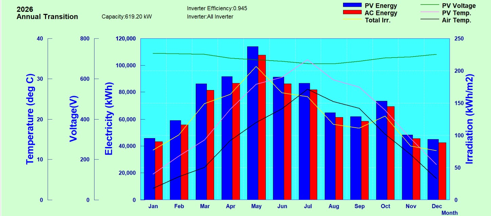

P50 and P90 for solar in Korea: how we build a bankable yield estimate
Korean weather sources and their bias, bad station years, the IEA based uncertainty table, and a 496 kWp worked example with P90 at 91% of P50 for one year and 93% for a ten year average.
The short answer
In the yield assessments we prepare for lenders in Korea, the one year P90 comes out at about 91% of P50 and the ten year average P90 at about 93%, with a total one year uncertainty near 7% (one sigma). PVsyst reports a one year P90 from year to year variability only, so for a bankable number we add the systematic uncertainties outside the program, show both values, and state which one the loan is sized on.
Foreign investors who have financed solar in Europe or the United States arrive with a clear expectation: a P50 from a simulation, a P90 for the debt case, and a list of uncertainties with their sources. In Korea the method is the same, but the inputs are not. The public weather data is different, the losses that matter are different, and the curtailment risk is regional. This note explains how we build the number, with a worked example on a 496 kWp test layout in the south west of the country.
The example is a test case we ran on a real parcel with an assumed module and a 3D scene traced from a rendering, not a client plant. The figures are therefore ours to publish in full.
Where Korean weather data comes from
The Korea Meteorological Administration runs a network of synoptic stations (ASOS) with hourly global irradiance going back more than fifteen years, and the data is free. That is the backbone of our assessments. The station is rarely on the site, however, and PVsyst itself notes that a station more than about 10 km away gives no better hourly accuracy than satellite data. So we always put three sources side by side: the nearest station, the PVGIS 5.3 typical year (SARAH3 and ERA5 satellite data) and NASA POWER monthly values.
| Source | Kind | Annual horizontal irradiance, test site | Against the station |
|---|---|---|---|
| KMA station (Mokpo, 34.2 km from the site), 2010 to 2024, ten valid years | Ground measurement, hourly | 1,470 kWh/m² | 0.0% |
| NASA POWER 2001 to 2024 | Satellite and reanalysis, monthly | 1,437 kWh/m² | −2.3% |
| PVGIS 5.3 typical year | Satellite typical year | 1,488 kWh/m² | +1.2% |
At this site the three agree within 1.8%. That is not always so. At a site in Gongju the spread between the station, NASA POWER and PVGIS was about 9%, and at a site in Asan about 14%, which is why the long term bias of the weather data cannot be left out of the uncertainty budget. We take the larger of the spread between providers and the published satellite error (3.1%) as the bias term.
Bad station years are removed, and we say so
Korean station records contain years in which the sensor was clearly degraded. The test site station had five such years, 2013 to 2017, where annual irradiance fell more than 7% below the satellite value for the same coordinates and PVsyst warned that clear day irradiance was below the clear sky model. We simulate every year separately, drop the suspect years, and compute the year to year variation from the remaining ten. Keeping all fifteen years in this case would have lowered the ten year P50 by 4.1% and inflated the variability, both in the wrong direction for an honest estimate.

The uncertainty budget
We follow IEA PVPS Task 13 (report T13-12) and separate the items that do not shrink with time from the weather variation that does. Each is a one sigma value in percent of annual energy.
| Item | Sigma | Basis |
|---|---|---|
| Long term bias of the weather data | 3.1% | Larger of the provider spread and the published satellite error |
| Transposition and diffuse model | 1.0% | Monthly transposition error under 1% (PVsyst) |
| Module model (STC rating, low light, temperature, spectrum, reflection) | 3.1% | Five components of IEA T13-12 table 15 combined |
| Shading model (horizon and near objects) | 1.0% | Half of the 2.0% row shading value, because we build a 3D scene with public building heights |
| Soiling | 2.0% | IEA T13-12 table 9 value for sites outside Germany |
| Mismatch, wiring, inverter, transformer | 1.9% | IEA table 15 values combined |
| Availability | 1.0% | Our own figure; fleet data show about 2% average unavailability |
| Systematic total | 5.5% | Root sum of squares of the rows above |
| Year to year weather variation | 4.3% | Coefficient of variation of the ten valid simulated years |
| One year total | 6.9% | Root sum of squares of systematic and weather terms |
| Ten year average total | 5.6% | Weather term divided by the square root of ten |
Degradation is not in this table. PVsyst states that long term degradation is not compatible with the P90 concept, and we agree: it is a drift in the P50, not a random spread around it. We apply 0.5% a year to the P50 path, which is the median of the large United States fleet studies and more conservative than the 0.33% a year that current N type module warranties promise. A sensitivity at 0.3% and 0.8% a year moves the ten year average P50 by +1.0% and −1.5%.
The worked example
The test layout is 495.6 kWp on fixed ground mounts at 20 degrees, two modules high in portrait with a 7 m row pitch, surrounded by 301 trees that were modelled one by one. Near shading costs 10.3% of irradiance and a further 5.1% in electrical mismatch, so the performance ratio is a low 69%; that is a property of the layout, not of Korea. The exceedance values are below.
| Case | P50 | P75 | P90 | P95 | P99 |
|---|---|---|---|---|---|
| First year (MWh) | 557 | 531 | 508 | 494 | 467 |
| Ten year average (MWh) | 544 | 523 | 504 | 493 | 472 |
The first year P90 is 91.1% of P50, the ten year average P90 is 92.8%. We size the debt service on the ten year average P90 and show the first year value for the first repayment year. A Monte Carlo run of 20,000 draws, with one sided triangular distributions for soiling, shading and availability as IEA recommends, reproduces the closed form values within rounding.
What PVsyst gives you and what it does not
- The P50 to P90 tool inside PVsyst works on year to year variability. Its help text says the inputs are random annual variations, not absolute uncertainties, and it has no field for weather data bias. We enter our systematic items in the custom field and still recompute outside.
- PVsyst P90 is a one year value. The ten year average is computed with the formula above and printed next to it.
- P90 has meaning only for annual energy. Monthly or hourly P90 values are statistically meaningless, and multiplying an hourly profile by the P90 to P50 ratio is wrong, because a bad year is a year with more cloudy weeks, not a year that is uniformly dimmer.
- A simulation run on a single measured year is not a P50. We use a multi year representative file for the P50 and the single years only for the variability.
- For submission to a bank the PVsyst report must come from a licensed copy. Demo output carries a watermark and is not accepted.
Korean specifics that change the loss table
| Item | Our default | Why |
|---|---|---|
| Module thermal coefficient Uc | 20 W/m²K on roofs, 29 on open racks | A measured Korean house roof matched PVsyst at 20; PVsyst recommends 29 for free standing arrays. Going from 20 to 29 raises annual energy about 4% |
| Soiling | 2% a year | No published Korean annual measurement; one spring dust test showed 2.1% on a single module, so 2% is kept with a 3 to 5% sensitivity near livestock or unpaved roads |
| Snow | Inside the 2% soiling unless the site is in a heavy snow area | Most sites are below 1 kN/m² ground snow load; heavy snow counties get a monthly loss |
| Curtailment | Not in sigma; a separate scenario | Nationwide curtailment was 0.3% of renewable output in the first half of 2026, but Honam curtailed 83,944 MWh in 171 events in 2025 and a Bank of Korea study projects 6.7% for Jeju in 2026 without flexibility resources |
| Availability | 1% a year | Inverter availability median 0.99 in fleet data; no Korean statistic published |
For reference, the eight plants we simulated in 2026 with these settings came out between 1,169 and 1,367 kWh per kWp a year, with performance ratios of 81 to 87% where shading was normal. How two programs compare on the same roof is in our note on the 619 kWp cross check.
What a lender receives
A six page assessment with the 3D scene and the rendering it was traced from, the provider comparison, the year by year table with excluded years marked, the uncertainty table with sources, the exceedance table, a 25 year P50 and P90 path with degradation, sensitivities on degradation and weather source, and the full PVsyst report as an annex. Send us the parcel numbers or the layout and we tell you which station and which years we would use before we run anything.
If you are planning a project in Korea and want this check done on your site, email the drawings or the parcel list to info@ecokkorea.co.kr. We reply with the scope and schedule first.
Sources: IEA PVPS Task 13 reports T13-12:2018 (Uncertainties in PV System Yield Predictions and Assessments, tables 9 and 15) and T13-08:2017 (Technical Assumptions Used in PV Financial Models); PVsyst 8.1 help, P50 to P90 evaluations; our test assessment of 8 November 2026 on a 495.6 kWp layout near Haenam using KMA station Mokpo 2010 to 2024, PVGIS 5.3 and NASA POWER; a published Korean study of a Daejeon house roof for the Uc value; Korea Power Exchange curtailment figures reported in 2026 and the Bank of Korea study of November 2025 for Jeju. Example figures are from a test layout, not a client plant.
More insights
- Korean solar permitting setback rules explained
- How we size ESS for peak shaving with 15 minute data
- PVsyst vs Solar Pro cross-check on a 619 kWp roof
- Agrivoltaic structure design basics
- Electrical BOQ and quantity take-off workflow
- Korea industrial electricity tariff 2026: rates, demand charges and a worked bill
- Solar permitting in Korea: the seven steps, statutory periods and a real timeline
- Net metering in Korea: the Article 18 rules and what changes on the bill
- Korea's agrivoltaics act: who can build, where, for how long, and the draft design rules
- Peak shaving ESS payback in Korea: a worked example with 2026 tariffs
- BESS feasibility study in Korea: what a bankable analysis contains and how we cross check it
- Rooftop solar structural review in Korea: loads, anchors, reinforcement and the permits that follow
- Fire alarm and telecom design and BOQ in Korea: separate contracts, detector counts and the quantities that get missed
- Solar project timeline in Korea: how long each stage really takes, from license to commercial operation